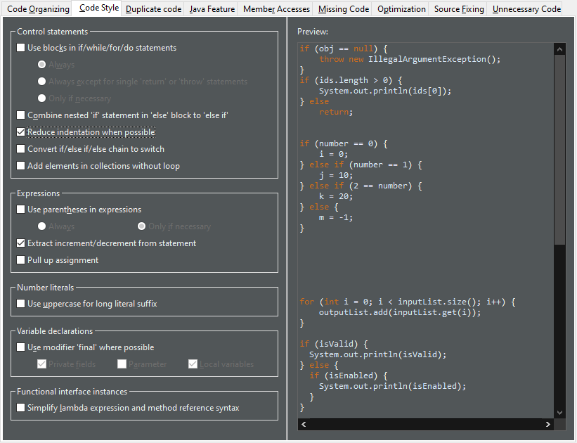
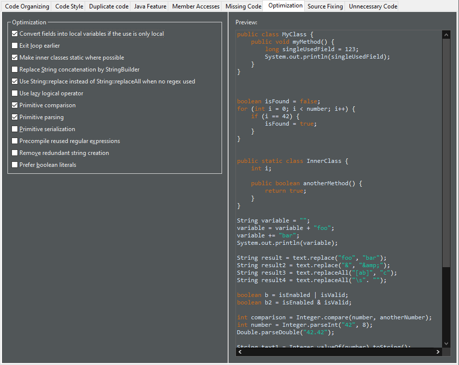
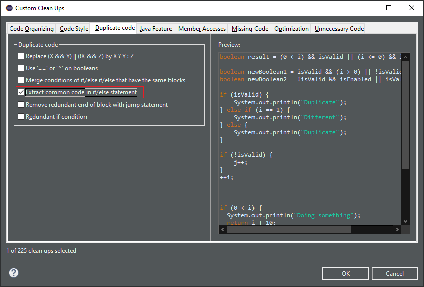
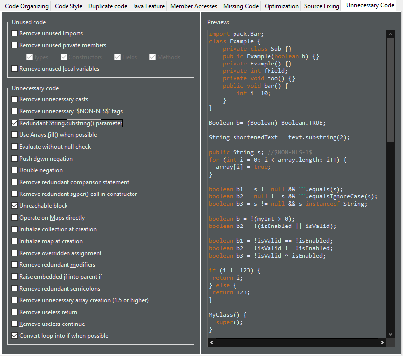

JUnit
Java Editor
When several blocks fall through, it reduces the block with the greatest indentation.
It can negate an if condition if the else statements fall through.
To apply the clean up, select Reduce indentation when possible check box on the Code Style tab in your clean up profile.

For the given code:

One gets:

It moves before the prefix expressions, it moves after the postfix expressions, it converts as postfix expressions, it does not move increments from loop condition and it does not cleanup several increments in the same statement.
To apply the clean up, select Extract increment/decrement from statement check box on the Code Style tab in your clean up profile.
For the given code:

One gets:

You can use these clean ups while upgrading the Java version in your code.

instanceof operator when possible.
It is only applicable for Java 15 or higher when preview features are enabled.
To apply the clean up, select Pattern matching for instanceof check box on the Java Feature tab in your clean up profile.
For the given code:

One gets:

Comparator.comparing() method.
The feature is enabled only with Java 8 or higher.
The Comparator type must be inferred by the destination of the comparator.
The algorithm of the comparator must be standard and based on one field or method.
The cleanup can handle the null values and reversed orders.
To apply the clean up, select Use Comparator.comparing() check box on the Java Feature tab in your clean up profile.
For the given code:

One gets:

The feature is enabled only with Java 7 or higher.
To apply the clean up, select Use Multi-catch check box on the Java Feature tab in your clean up profile.
For the given code:

One gets:

The previous value should not be read. The field should be private. The field should not be final. The field should be primitive. The field should not have annotations.
To apply the clean up, select Convert fields into local variables if the use is only local check box on the Optimization tab in your clean up profile.

For the given code:

One gets:

static if it doesn't use top level class members.
To apply the clean up, select Make inner classes static where possible check box on the Optimization tab in your clean up profile.
For the given code:

One gets:

The object should be used as a primitive and not as a wrapper.
To apply the clean up, select Primitive parsing check box on the Optimization tab in your clean up profile.
For the given code:

One gets:

if / else if / else control flow.
Ultimately it removes the empty and passive if conditions.
The control flow should have an else clause and the duplicate code should not rely on variables declared in the block.
The statement matching performs a deep analysis. All the blocks should end with the same set of statements, or the blocks with different code should fall through with a jump statement (return, throw, continue or break).
To apply the clean up, select Pull down common code from if/else statement check box on the Duplicate code tab in your clean up profile.

For the given code:

One gets:

And for the given code where all tails of blocks are identical except one block which falls through:

The identical tails of blocks have been pulled down from the control flow and the falling through block has been left as it is:

substring() parameter if this parameter is the length of the string. It's the default value.
It must reference the same expression.
The expression must be passive.
To apply the clean up, select Redundant String.substring() parameter check box on the Unnecessary code tab in your clean up profile.

For the given code:

One gets:

if conditions that are identical and removes the second one.
The conditions should be passive.
No exceptions should be awaited.
It doesn't create unreachable code below the if statement which would create a compile error.
That is to say it avoids the case where only the removed block doesn't fall through, all the other cases fall through,
there are an else clause (not only if/else clauses)
and a statement after the control workflow.
To apply the clean up, select Unreachable block check box on the Unnecessary code tab in your clean up profile.
For the given code:

One gets:

while loop that always terminates during the first iteration by an if.
The loop should not contain any continue statement.
The loop should only contain break statements without statements after.
To apply the clean up, select Convert loop into if when possible check box on the Unnecessary code tab in your clean up profile.
For the given code:

One gets:

⚠️ Use it carefully. You may get an unexpected behavior. It may trigger zombie code. A zombie code is a dead code that is dead because an error occurs before. The day someone fixes the error, the zombie code comes back to life and alters the behavior. Although most of the cleanups need review, those ones need testing.

Some identifiers (e.g. var, yield, record etc.) are restricted identifiers because they are not allowed in some contexts. Semantic highlighting options for such identifiers can be controlled by the element Restricted identifiers under Java category in Java > Editor > Syntax Coloring preference page.

External annotations had been introduced in Eclipse 4.5 in order to overlay not-editable library classes with null annotations to specify the null contract against which library calls should be analysed. You can now apply the same concept for another kind of classes that should not be edited: generated source code.
In the Java Build Path dialog, also source folders now have a node "External annotations" where a path to Eclipse External Annotation files (.eea) can be configured.

Given a project that is configured for annotation based null analysis, and given a Java class inside a source folder configured for external annotations, the editor now offers a quick assist (Ctrl+1) for annotating individual type references in the signatures of methods and fields.

The selected option will record that the return type should be interpreted as @NonNull List<Attribute>
(the popup to the right showing the internal format how this annotation will be stored in an .eea file).
With this annotation in place, the annotated signature will be shown in hovers and will be used for null analysis:


The created type will declare the sealed type as its super type and it can be declared as final, non-sealed, or sealed with the available quick fixes for further inheritance control.
AutoClosable there's a new quick assist (Ctrl+1) available: Assign to new local variable in try-with-resources.

It creates a new try-with-resources block with the expression assigned to a resource variable. The variable type and name can be selected from a few suggestions:

The default hotkey sequence for this quick assist is Ctrl+2 followed by T.
catch clause for any exceptions (such as IOException) thrown by the auto-close if not already handled via an existing catch clause
or throws directive. In the case where the existing code catches or throws an exception that sub-classes the exceptions of the new catch clause, an
additional catch clause will be added to rethrow the exception to ensure code logic remains consistent.


Java Views and Dialogs

Java Compiler
Java Formatter
Debug